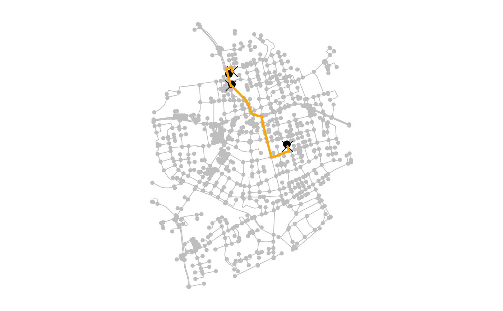

Find the optimal route through a set of nodes in a spatial network
Source:R/travel.R
st_network_travel.RdSolve the travelling salesman problem by finding the shortest route through a set of nodes that visits each of those nodes once.
Usage
st_network_travel(
x,
nodes,
weights = edge_length(),
optimizer = "TSP",
router = getOption("sfn_default_router", "igraph"),
return_paths = TRUE,
use_names = FALSE,
return_cost = TRUE,
return_geometry = TRUE,
...
)Arguments
- x
An object of class
sfnetwork.- nodes
Nodes to be visited. Evaluated by
evaluate_node_query.- weights
The edge weights to be used in the shortest path calculation. Evaluated by
evaluate_weight_spec. The default isedge_length, which computes the geographic lengths of the edges.- optimizer
The optimization backend to use for defining the optimal visiting order of the given nodes. Currently the only supported option is
'TSP'. See Details.- router
The routing backend to use for the cost matrix computation and the path computation. Currently supported options are
'igraph'and'dodgr'. See Details.- return_paths
After defining the optimal visiting order of nodes, should the actual paths connecting those nodes be computed and returned? Defaults to
TRUE. If set toFALSE, a vector of indices in visiting order is returned instead, with each index specifying the position of the visited node in thefromargument.- use_names
If a column named
nameis present in the nodes table, should these names be used to encode the nodes in the route, instead of the node indices? Defaults toFALSE. Ignored when the nodes table does not have a column namednameand ifreturn_paths = FALSE.- return_cost
Should the total cost of each path between two subsequent nodes be computed? Defaults to
TRUE. Ignored ifreturn_paths = FALSE.- return_geometry
Should a linestring geometry be constructed for each path between two subsequent nodes? Defaults to
TRUE. The geometries are constructed by callingst_line_mergeon the linestring geometries of the edges in the path. Ignored ifreturn_paths = FALSEand for networks with spatially implicit edges.- ...
Additional arguments passed on to the underlying function of the chosen optimization backend. See Details.
Value
An object of class sf with one row per leg of the
optimal route, containing the path of that leg.
If return_geometry = FALSE or edges are spatially implicit, a
tbl_df is returned instead. See the documentation of
st_network_paths for details. If return_paths = FALSE,
a vector of indices in visiting order is returned, with each index
specifying the position of the visited node in the from argument.
Details
The sfnetworks package does not implement its own route optimization
algorithms. Instead, it relies on "optimization backends", i.e. other R
packages that have implemented such algorithms. Currently the only supported
optimization backend to solve the travelling salesman problem is the
TSP package, which provides the
solve_TSP function for this task.
An input for most route optimization algorithms is the matrix containing the
travel costs between the nodes to be visited. This is computed using
st_network_cost. The output of most route optimization
algorithms is the optimal order in which the given nodes should be visited.
To compute the actual paths that connect the nodes in that order, the
st_network_paths function is used. Both cost matrix computation
and shortest paths computation allow to specify a "routing backend", i.e. an
R package that implements algorithms to solve those tasks. See the
documentation of the corresponding functions for details.
Examples
library(sf, quietly = TRUE)
oldpar = par(no.readonly = TRUE)
par(mar = c(1,1,1,1))
net = as_sfnetwork(roxel, directed = FALSE) |>
st_transform(3035)
# Compute the optimal route through three nodes.
# Note that geographic edge length is used as edge weights by default.
route = st_network_travel(net, c(1, 10, 100))
route
#> Simple feature collection with 3 features and 6 fields
#> Geometry type: LINESTRING
#> Dimension: XY
#> Bounding box: xmin: 4151359 ymin: 3207582 xmax: 4151782 ymax: 3208051
#> Projected CRS: ETRS89-extended / LAEA Europe
#> # A tibble: 3 × 7
#> from to node_path edge_path path_found cost geometry
#> * <dbl> <dbl> <list> <list> <lgl> [m] <LINESTRING [m]>
#> 1 100 10 <dbl [4]> <dbl [3]> TRUE 89.8 (4151383 3207963, 4151368 …
#> 2 10 1 <dbl [22]> <dbl [21]> TRUE 667. (4151383 3207963, 4151413 …
#> 3 1 100 <dbl [22]> <dbl [21]> TRUE 728. (4151359 3208049, 4151364 …
plot(net, col = "grey")
plot(st_geometry(net)[route$from], pch = 20, cex = 2, add = TRUE)
plot(st_geometry(route), col = "orange", lwd = 3, add = TRUE)
# Instead of returning a path we can return a vector of visiting order.
st_network_travel(net, c(1, 10, 100), return_paths = FALSE)
#> [1] 3 2 1
# Use spatial point features to specify the visiting locations.
# These are snapped to their nearest node before finding the path.
p1 = st_geometry(net, "nodes")[1] + st_sfc(st_point(c(50, -50)))
p2 = st_geometry(net, "nodes")[10] + st_sfc(st_point(c(-10, 100)))
p3 = st_geometry(net, "nodes")[100] + st_sfc(st_point(c(-10, 100)))
pts = c(p1, p2, p3)
st_crs(pts) = st_crs(net)
route = st_network_travel(net, pts)
route
#> Simple feature collection with 3 features and 6 fields
#> Geometry type: LINESTRING
#> Dimension: XY
#> Bounding box: xmin: 4151325 ymin: 3207456 xmax: 4151850 ymax: 3208205
#> Projected CRS: ETRS89-extended / LAEA Europe
#> # A tibble: 3 × 7
#> from to node_path edge_path path_found cost geometry
#> * <dbl> <dbl> <list> <list> <lgl> [m] <LINESTRING [m]>
#> 1 544 107 <dbl [23]> <dbl [22]> TRUE 936. (4151364 3208051, 4151370 …
#> 2 107 737 <dbl [5]> <dbl [4]> TRUE 232. (4151364 3208051, 4151359 …
#> 3 737 544 <dbl [27]> <dbl [26]> TRUE 1168. (4151378 3208168, 4151369 …
plot(net, col = "grey")
plot(pts, pch = 20, cex = 2, add = TRUE)
plot(st_geometry(net)[route$from], pch = 4, cex = 2, add = TRUE)
plot(st_geometry(route), col = "orange", lwd = 3, add = TRUE)

par(oldpar)